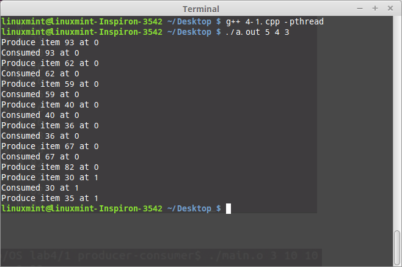
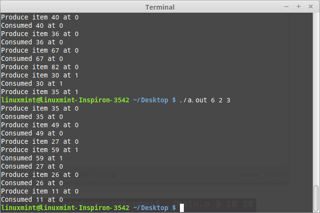
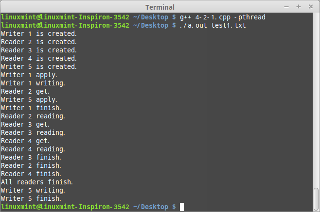
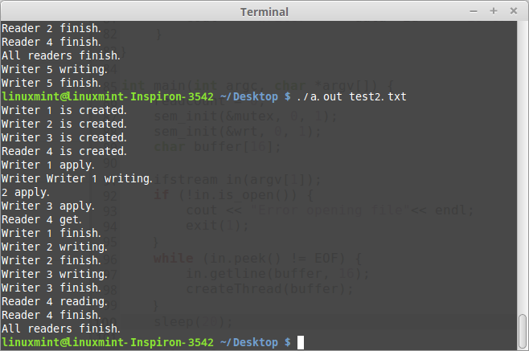
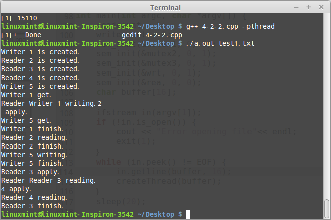
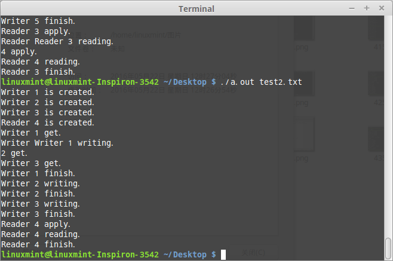

操作系统经典同步问题包括生产者-消费者问题、读者-写者问题、哲学家就餐问题等。下面讲的是生产者-消费者问题以及读者-写者问题。
需要先弄清楚的是，wait()函数将信号量值-1，若值 大于0，则继续执行接下来的代码，否则等待；signal()函数将信号量+1。
生产者-消费者问题
利用线程同步机制，实现生产者-消费者问题。设计一个程序来解决有限缓冲问题;代码中使用了三个信号量: empty (以记录有多少空位)、full (以记录有多少满位)以及mutex (二进制信号量或互斥信号量，以保护对缓冲插入与删除的操作)。empty与full采用标准计数信号量，而mutex 将采用二进制信号量。生产者与消费者作为独立线程，在empty、full、mutex的同步前提下，对缓冲进行插入与删除。
semaphore
使用
完整代码
|
|
结果示例


读者-写者问题
创建一个进程，此进程包含n个线程。用这n个线程来表示n个读者或写者。每个线程按相应测试数据文件(后面有介绍)的要求进行读写操作。用信号量机制分别实现读者优先和写者优先的读者-写者问题。
读者-写者问题的读写操作限制(仅读者优先或写者优先)：
1)写-写互斥，即不能有两个写者同时进行写操作。
2)读-写互斥，即不能同时有一个线程在读，而另一个线程在写。
3)读-读允许，即可以有一个或多个读者在读。
读者优先附加限制：如果一个读者申请进行读操作时已有另一个读者正在进行读操作，则该读者可直接开始读操作。
写者优先的附加限制：如果一个读者申请进行读操作时已有另一写者在等待访问共享资源，则该读者必须等到没有写者处于等待状态后才能开始读操作。
读者优先
使用mutex实现对readcount访问的互斥。使用wrt实现对临界区的同步。
当读者占用临界区时：其他申请临界区的读者无需等待, 直接进入临界区, 执行读的操作；而写者等待, 直到所有读者退出临界区, 即readcount == 0时, 才能开始访问临界区, 执行写的操作。
当写者占用临界区时：第一个申请的读者等待wrt信号, 其余读者阻塞在mutex信号上, 一直到当前写者退出临界区并获得临界区访问权；其他到来的写者等待, 直到当前写者退出临界区并获得临界区访问权。
|
|
以上为测试数据。每行测试数据包括四个字段，各个字段间用空格分隔。第一字段为一个正整数，表示线程序号。第二字段表示相应线程角色，R表示读者，W表示写者。第三字段为一个正数，表示读写操作的开始时间：线程创建后，延迟相应时间(单位为秒)后发出对共享资源的读写申请。第四字段为一个正数，表示读写操作的持续时间。
|
|


注意：这里的输出会乱，原因不明，后来在管程的试验中，发现改为printf就不会乱。
写者优先
写者优先与读者优先类似。不同之处在于一旦一个写者到来，它应该尽快对文件进行写操作，如果有一个写者在等待，则新到来的读者不允许进行读操作。为此应当添加一个整型变量write_count，用于记录正在等待的写者的数目，当write_count=0时，才可以释放等待的读者线程队列。
为了对全局变量write_count实现互斥，必须增加一个互斥对象mutex3。
为了实现写者优先，应当添加一个临界区对象read，当有写者在写文件或等待时，读者必须阻塞在read上。
读者线程除了要对全局变量read_count实现操作上的互斥外，还必须有一个互斥对象对阻塞read这一过程实现互斥。这两个互斥对象分别命名为mutex1和mutex2。
|
|


这里使用c++的cout，输出也会混乱，没有在代码里面改为printf。